User Guide
1.0 How to Use RED-X
This section provides step-by-step guidance on using each component of RED-X. Whether you’re exploring historical data, identifying research trends, or preparing for a new project, RED-X offers tools to support your workflow.
2.0 Home Tab
When you first access RED-X, you’re welcomed by the Home tab, which serves as both an overview and introduction to the platform.
At the top of the page is a carousel-style summary that cycles through key statistics and features:
- Available dataverses
- Total number of studies
- Number of authors and keywords
- Number of downloadable files
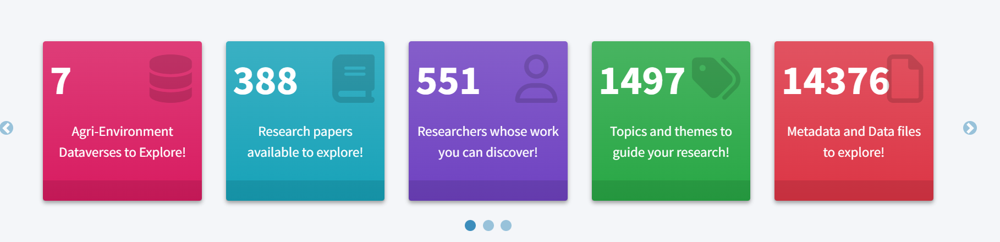
Figure: Home tab displaying summary statistics.
The Home tab also includes a visual preview and description of the two main functional areas of the app:
- Network Explorer – For visualizing data relationships by keyword, author, and institution.
- Data Explorer – For detailed study-level metadata browsing and file access.
Beneath the carousel, you’ll find a short introduction to the RED-X platform. This text outlines the purpose of the app — helping users explore historical Agri-Food data, identify reusable datasets, and support various stages of research.
Tip: Use the Home tab as a launching point to understand what’s available and choose your next step based on your research needs.
3.0 Network Explorer
The Network Explorer tab provides an interactive visualization of how studies are connected through shared keywords and authors, as well as their associated colleges and departments. This tool helps users uncover patterns, identify collaborators, and explore thematic clusters across historical datasets.
User can use the filters feature to narrow results, then interact with nodes in the network to see how keywords, people, and institutions are connected.
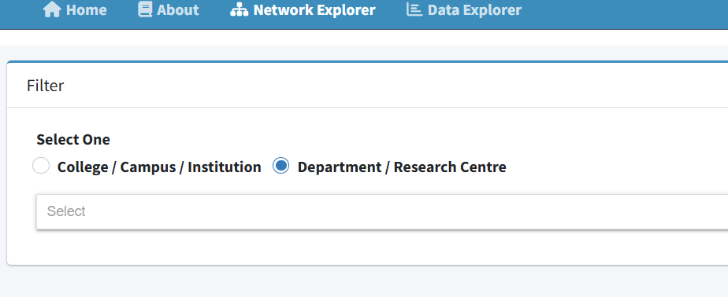
3.1 Featured example:
Suppose you are planning a research project focused on pH. Here’s how RED-X supports your workflow:
- Search for the keyword (e.g., “pH”) to reveal all related studies, other linked keywords, and contributing authors.
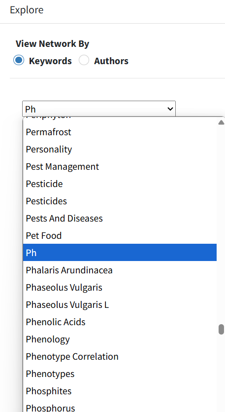
- Click nodes to highlight related studies.
- Hover over nodes to reveal labels and context.

- Use dropdown filters to focus the network by:
- College/Campus/Institution
- Department/Campus
- Zoom, pan and scroll down to navigate the network space dynamically and display more details about the keywords including the number of associated studies and links to their DOIs on the Borealis Dataverse.
The visual structure enables discovery of new directions for research, potential collaborators, and dataset relevance based on shared keywords or institutional ties.
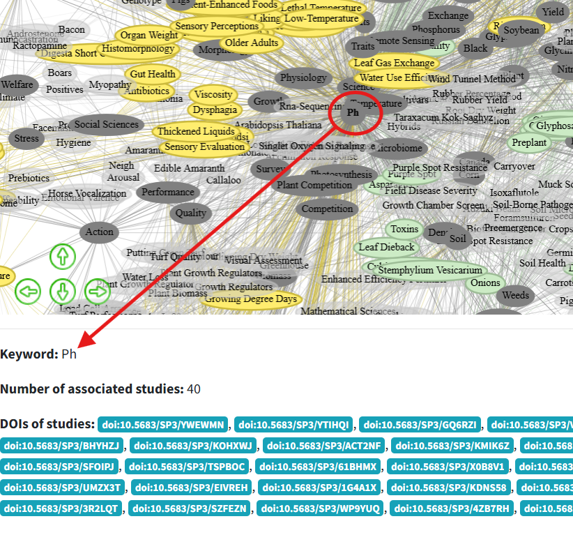
Figure: Network Explorer showing the keyword “pH” with connections to related studies, authors, and academic departments.
Explore Collaborations:
Trace authors or departments with similar work and explore their datasets for deeper context. The legend displays the color assigned to each department, making it easier to visually trace connections within the network. The “Shared Across Multiple” category represents keywords or authors that appear in more than one department or college.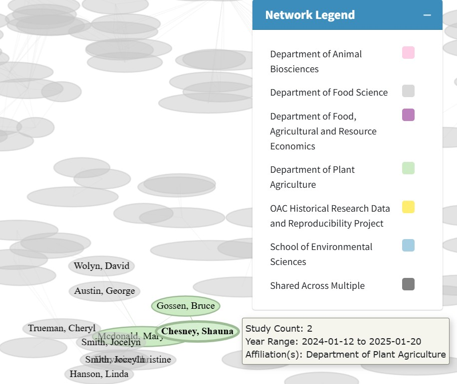
Tip: Use this tool early in your research planning to map out what’s already been studied and where gaps or opportunities may exist.
4.0 Data Explorer
The Data Explorer tab presents a comprehensive, filterable table of all available studies harvested from the Borealis Dataverse. It serves as the primary interface for browsing study-level metadata and accessing associated data files.
Users can:
- Filter by college, department, or dataverse using dynamic dropdowns.
- Search by keyword to find studies relevant to specific topics (e.g., pH, manure, cover crops).
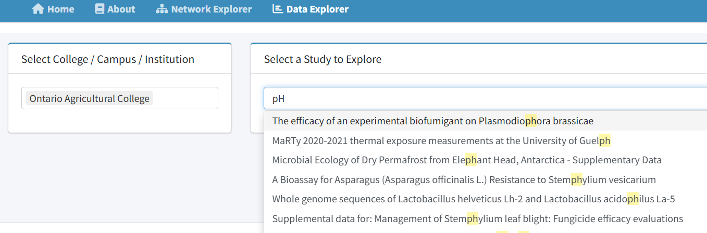
- View metadata including study title, publication date, authors, affiliated institution, and study objectives.

- Access available files.
4.1 Featured Example
This example walks you through interacting with an individual study using the Data Explorer tab. You can view metadata, inspect raw data files, and review summary statistics to evaluate the study’s content and reusability.
- Study Overview
The Study Overview tab provides a concise, table-form summary of the metadata associated with a selected study. It displays key information such as the study title, period covered, DOI, data license, and other relevant details in a clear two-column layout. It also displays some interactive elements such as clickable DOI and license links to enhance usability and visibility. This tab offers users a quick and accessible way to assess study-level information before exploring raw data or associated files.
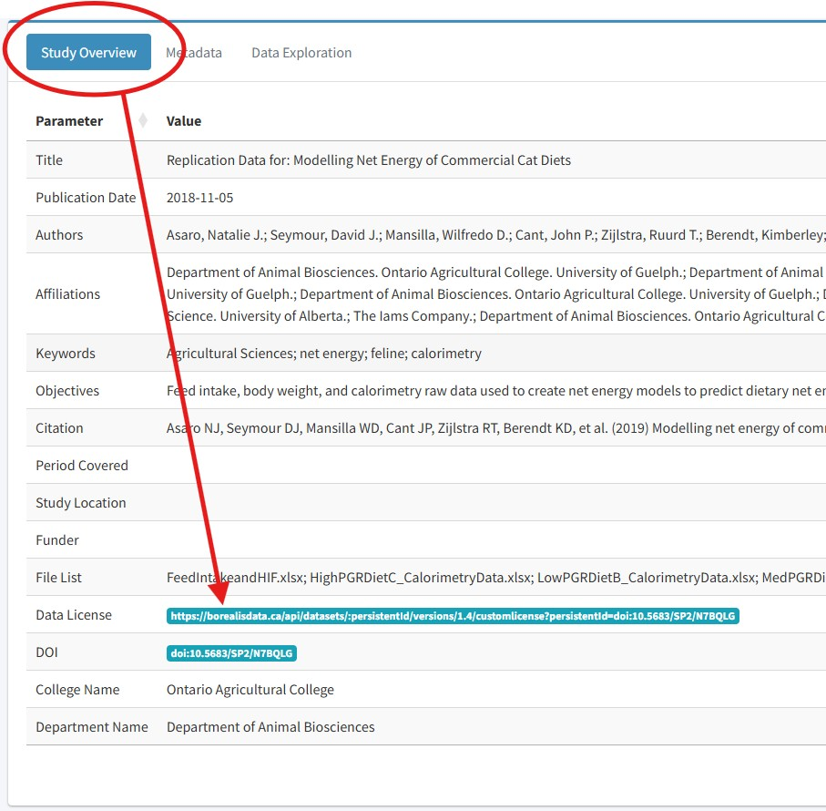
- View Metadata
The Metadata tab helps users explore important background information about each dataset. When available, it shows two sections: a Data Description, which gives general details about the study, and a Data Schema, which outlines the structure of the dataset (such as column names and types). RED-X automatically displays this information if a compatible .txt metadata file is included. However, if no metadata file is found or the file is in an unsupported format (like PDF or Word), the tab will show no metadata file found indicating that metadata is not available. This feature gives users a quick overview of a dataset’s context before reviewing the raw data.
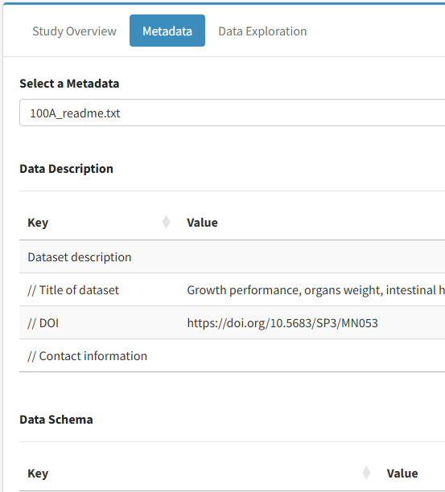
Figure showing what is displayed when metadata is available
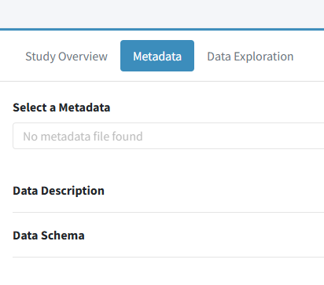
Figure showing what is displayed when metadata is not available
- Data exploration Tab
View All Datafile This section displays the full contents of the selected dataset in an interactive table. Users can scroll, search, and sort the data to explore the raw values directly within the app. It’s helpful for quickly reviewing the structure of the dataset, spotting missing values, or identifying specific entries.
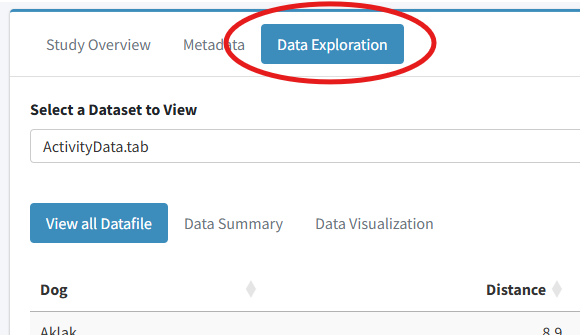
Data Summary The Data Summary section provides basic descriptive statistics for numeric columns in the selected dataset. This includes metrics like mean, minimum, maximum, and counts. It gives users a quick snapshot of the data’s distribution and quality, helping to assess its potential for reuse. If the dataset contains only text or unsupported values, the summary may be blank or trigger an error message.
Note: The Data Exploration tab only supports
.tabor.csvfile formats. If no compatible data file is found, or if the dataset is missing entirely, the app will display a messageno data files foundindicating that no data file is available. Additionally, the Data Summary and Data Visualization features are designed to work with numeric data. If the selected file contains only text or unsupported formats, these sections may show an error or return no results.
Data Visualization This section generates simple plots (e.g., histograms or scatter plots) based on the dataset’s contents. It allows users to visually explore trends, compare variables, and better understand the shape and relationships within the data. Visualizations are most useful when the dataset includes numeric columns. If the data is not suitable for plotting, this section may not display any output.
Select studies with accessible files for preliminary data review for reuse. Users can select datasets to view trends and summary statistics, helping them better understand the structure, scope, and potential reusability of historical data for their own research.
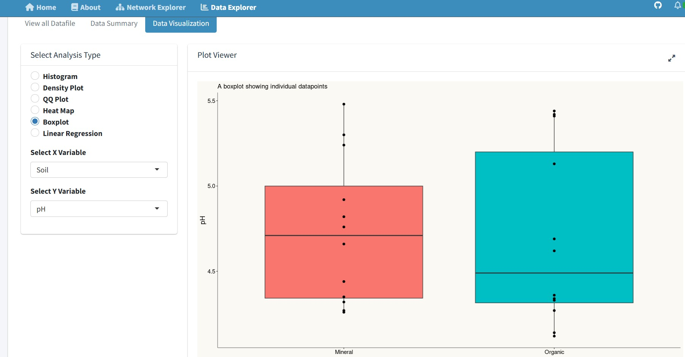
Figure: Example of visualizing dataset trends and summary statistics using the data visualization tool within RED-X.
Tip: Use the Data Explorer to review metadata and visualize data. Reviewed studies and data can provide useful context or methodological references for prelimimary stage during project development.
5.0 About Tab
The About tab contains background information on RED-X, its goals, and contributing institutions. This section is useful for understanding the development context and the broader research infrastructure it supports. It also gives information about the development team.
6.0 Tips & Best Practices
- Start with broad searches to discover unexpected related studies.
- Use both the Network and Data Explorer tabs for a comprehensive view.
- Use the summary boxes in the Home tab to monitor total data availability.
- Data updates every 48 hours — revisit often for new studies.
7.0 Need More Help?
If you need further assistance using the platform, refer to the Getting Started guide or contact the support team at adc@uoguelph.ca.